Navigation (primary)
Usage
Primary navigation
The primary navigation is used for wayfinding on all Red Hat web properties. It should include the most important content a visitor needs or might be looking for.
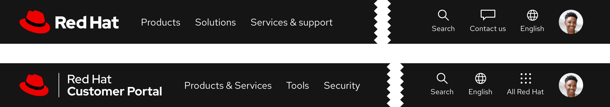
Full-width expandable tray
Menus will trigger an expandable tray when selected and include content or tasks that are specific to the website in which it is used. Use the expandable tray to organize a large amount of content in two, three, or four columns.
Warning
Do not use more than 4 columns in a full-width expandable tray, consider using a component like Tabs instead for more organization options.
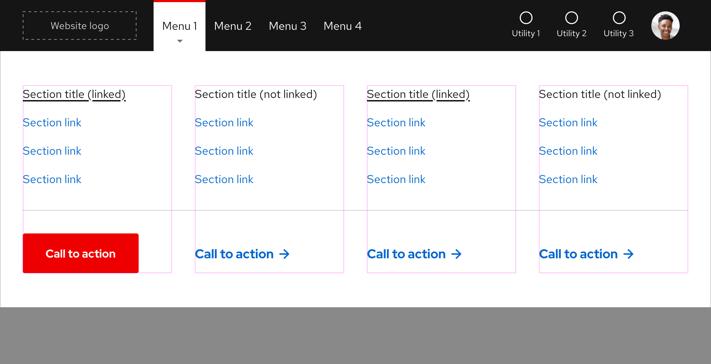
If content is organized in less than four columns, containers will stretch to fill the columns.
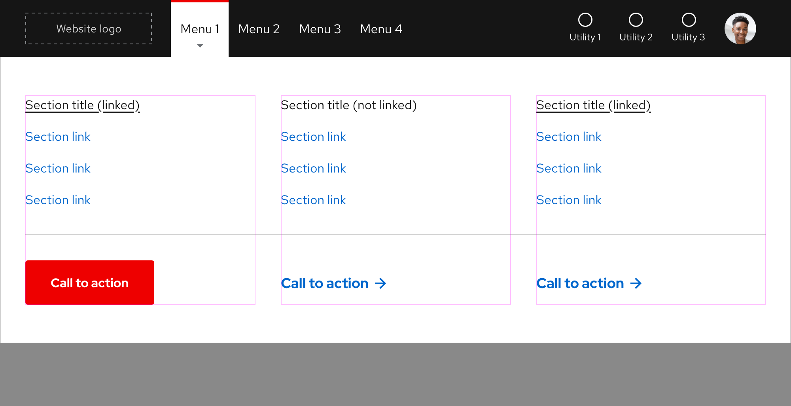

Fixed-width expandable tray
Sometimes a small amount of content can be placed in a fixed-width expandable tray and the size of this expandable tray depends on the amount of content. Utilities are not able to leverage fixed-width expandable trays at this time.
Warning
Do not use more than 2 columns to organize content in a fixed-width expandable tray, consider using a full-width expandable tray instead.
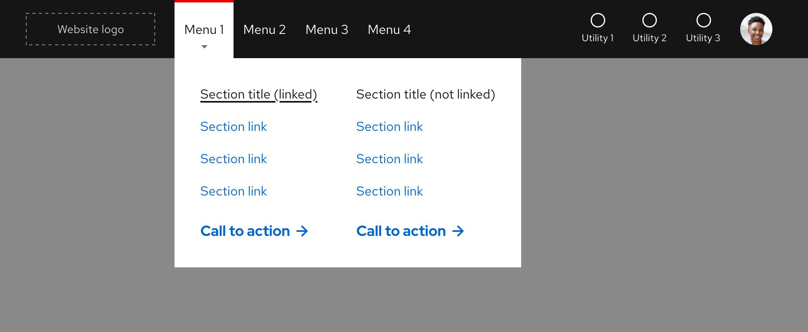
Menu slots
There is no maximum number of menu slots, but be conscious of space when adding menus especially when the text is translated to other languages.
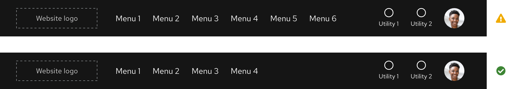
Components in an expandable tray
Use a component like Tabs to organize a very large amount of content that would exceed four columns. If the Tabs component is used, it will change to a nested Accordion on small breakpoints.
Helpful tip
Red Hat data analysis has shown that displaying 3 tabs performs better than displaying 5 tabs.
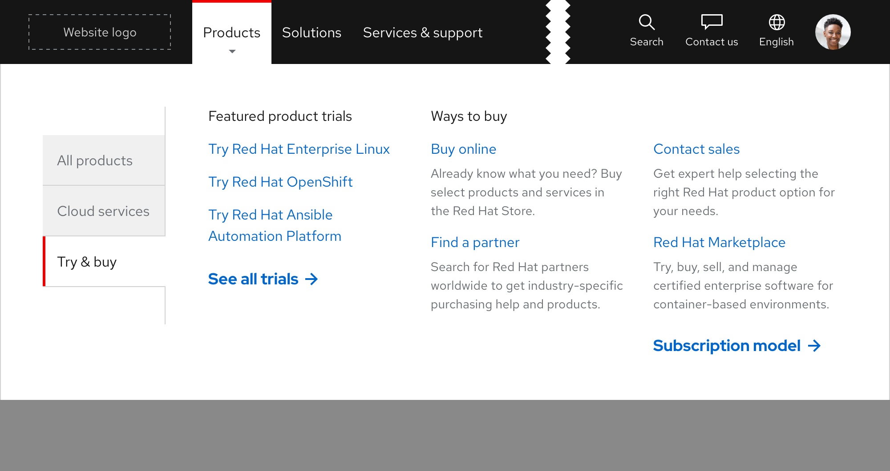
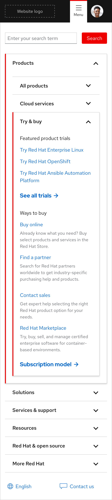
Utilities
The primary navigation includes utilities which are slots for actions or tools for global navigation (search for something, change the language, log in to your account, etc.). They may trigger an expandable tray when selected, but not all do. They are also customizable depending on specific audience needs or goals.
Helpful tip
The maximum number of utilities is 4 with the option of adding a fifth when included as part of a personalized experience.
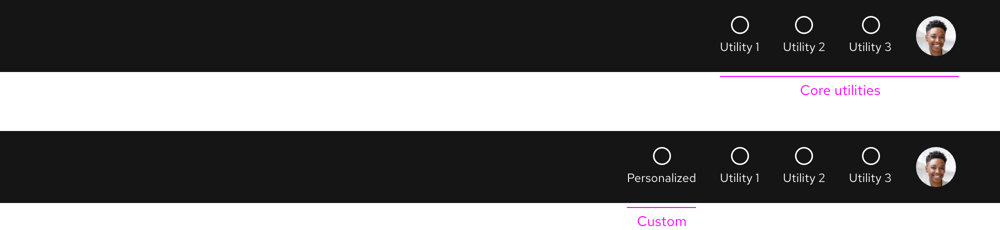
Utility ordering
The order of some utilities can be customized or even removed, but not all.
- The Account utility should always be visible on both large and small breakpoints
- The Search and Account utilities should always be visible on large breakpoints
- If a new utility is included as a part of a personalized experience, it should be first
- If no personalized experiences are active, the Search utility should be first and the Account utility should be last
- If a new utility requires a custom-designed icon, contact the Brand team
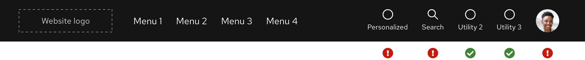
Menus and utilities on small breakpoints
When breakpoints become smaller, menus and most utilities will become hidden to reduce visual crowding. The Account utility should always be visible on any breakpoint.

Website examples
redhat.com
Developer
Hybrid Cloud
Behavior
Scrolling
The primary navigation is always sticky when scrolling on all devices and breakpoints.
Menus
On hover, menu text will display a red bar and gray arrow indicating an expandable tray will be triggered if selected.
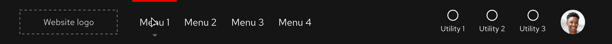
Utility menus vs. links
Some utilities leverage the expandable tray pattern or function as links.

Stacking
When an Announcement component is used, the primary navigation is positioned below it.
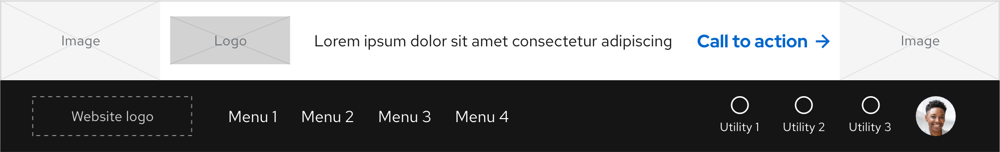
Scrolling with expandable tray
If the height of the expandable tray is shorter than the viewport, content will scroll underneath.
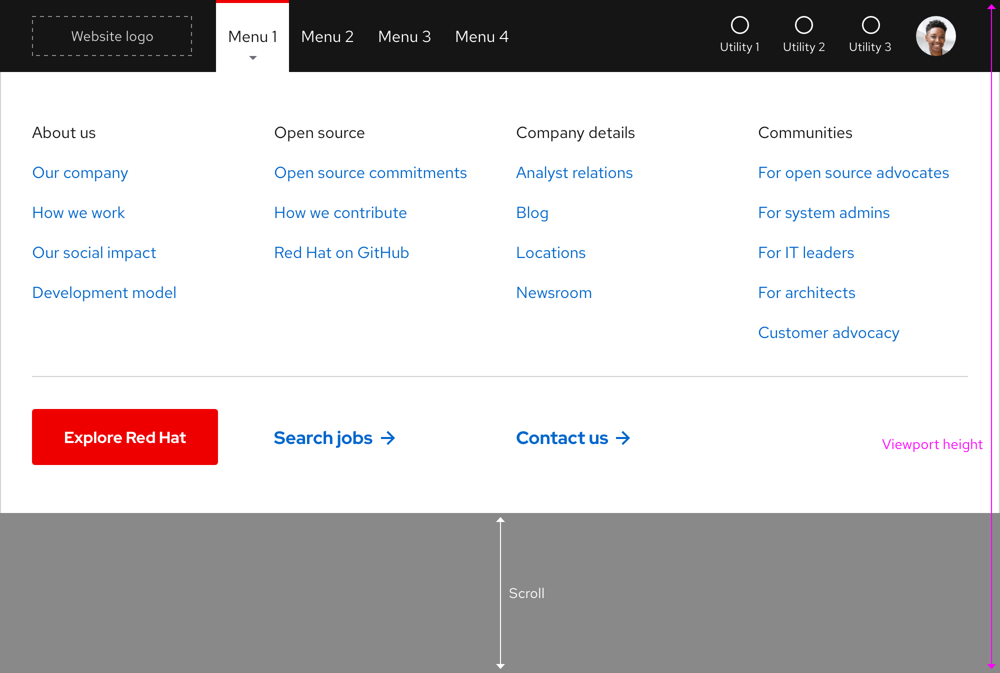
If the height of the expandable tray is taller than the viewport, the tray will scroll instead.
Warning
Be careful with featuring too much content because visitors may not see key information if they have to scroll.
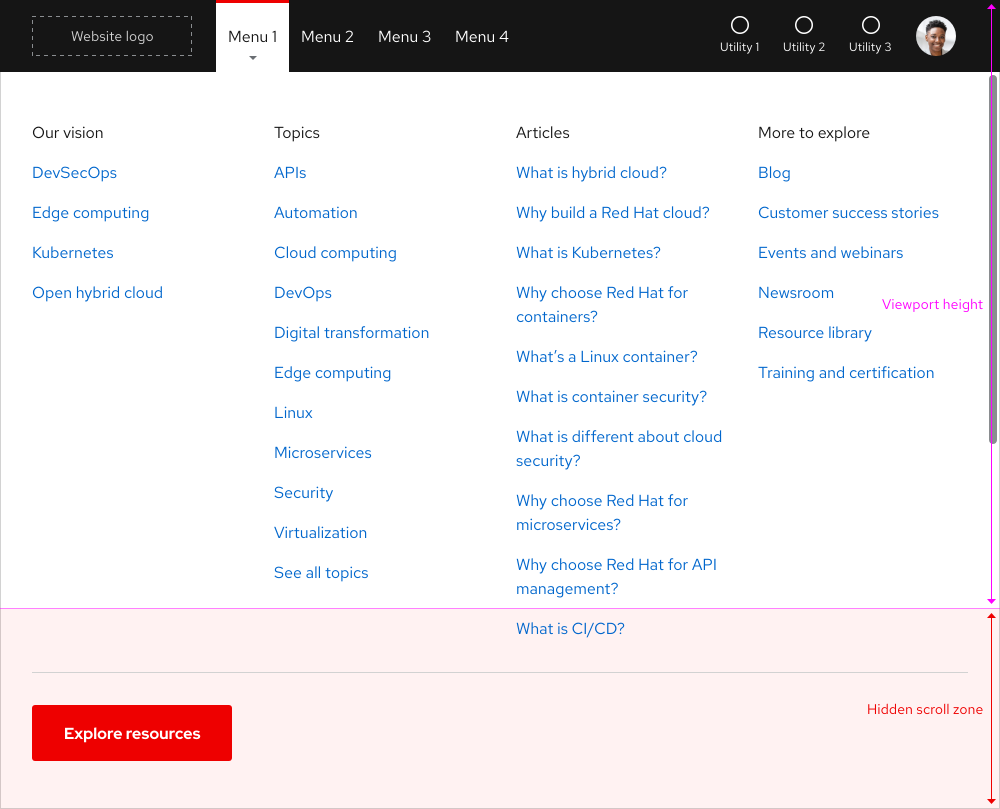
Navigating between expandable trays
Only one expandable tray can be visible at a time and there is no animation when navigating from one tray to the next.
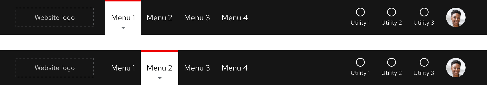
Collapsing the expandable tray
Clicking or tapping anywhere outside of the expandable tray should collapse it. Pressing the esc key should collapse the expandable tray as well.
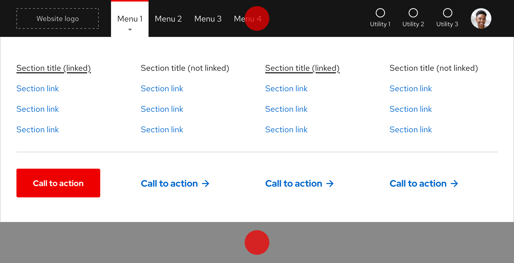
Additional behaviors
Keep in mind the following additional behaviors:
- The expandable tray should not collapse or expand without user input by mouse or keyboard
- Scrolling while the expandable tray is visible should not close the tray
Interaction states
Default
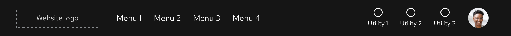
| State | Element | Styling |
|---|---|---|
| Default | Menu text | RH Text Regular, 16pt / 24 (1.5) / #fff |
| Default | Utility icon | #fff |
| Default | Utility text | RH Text Regular, 12pt / 18 (1.5) / #fff |
Hover

| State | Element | Styling |
|---|---|---|
| Hover | Menu and utility top bar | #e00, 3px thickness |
| Hover | Arrow below menu text | #6a6e73 |
Focus
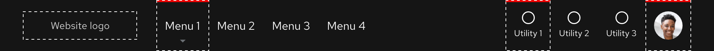{style="--inline-img-max-width: 1000px;"}
Helpful tip
The focus state carries over styles from the hover state and also adds a focus indicator.
| State | Element | Styling |
|---|---|---|
| Focus | Logo, menu, and utility focus indicator | #fff, dashed, 1px border width |
| Focus | Menu and utility top bar | #e00, 3px thickness |
Active
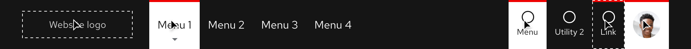
| State | Element | Styling |
|---|---|---|
| Active | Tab top bar | #e00, 3px thickness |
| Active | Tab background | #fff |
| Active | Menu text | RH Text Regular, 16pt / 24 (1.5) / #151515 |
| Active | Arrow below menu text | #6a6e73 |
Accessibility
Focus order
A logical focus order helps visitors understand and operate Red Hat web properties. Elements need to receive focus in an order that preserves meaning, therefore the focus order should make sense and not jump around randomly.
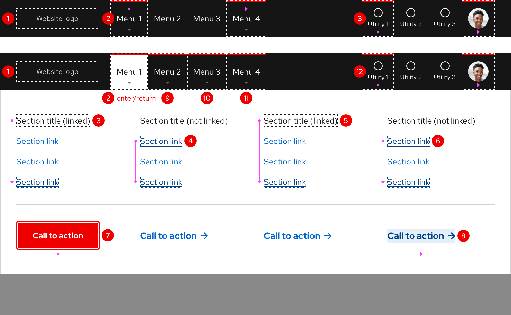
Red Hat legal and privacy links
- About Red Hat
- Jobs
- Events
- Locations
- Contact Red Hat
- Red Hat Blog
- Diversity, equity, and inclusion
- Cool Stuff Store
- Red Hat Summit
Red Hat legal and privacy links